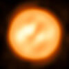
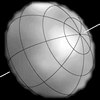
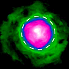

Пульт управления информацией:
Фокус на картинке – полная информация
50
887
11.6
M1–M2 Ia–ab
3590
0.0–1.61
−3.00

37–41
680–800
12.65
M1.5 Iab–Ib
3660
0.6–1.6
–2.73
57±5
370±50
1.2
M8IIIe
2740±190
0.6–1.6
−2.65
44±4
229–560
1
M7.5IIIe
2500–3129
7–11.6
–1.7
43±2
367
1.18
M7 IIIe
2918–3192
2.0–10.1
–0.73
18.4
350
1.5
S5,7: (~M5)
3100
5.31–7.01
–0.62
10.2
355 ± 55
1.3 ± 0.7
C6,5ea(Np)
2,640 ± 80
5.72–7.41
1.44
Оболочка, окружающая звезду, имеет сложную спиралеобразную структуру.
5.8 (15)
100
2.7
M6e–M9e
2800
7.4–14.3
1.31
2009A&A...496L...1L
3.3–4.1
1315–1575
27–36
K0 0-Ia
4287±760
6.1–7.5
2.12
2.45
900–1760
40
K2 0-Ia
3900–4200
6.65
2.83
2023AJ....166...78A
5 (0.2)
60–881
100–150
LBV + O
3900–4200
−1.0 – 7.6
1.658
2016A&A...594A.106W
2.65±0.08–3.21±0.03
169±8
8.4–13
G5 Iab/Ib; F6Ib-K0Ib
5091
3.35–4.06
1.684
2004ApJ...604L.113K
3.2
2.36×2.82
2.135
A0 V
10000
−0.02…+0.07
–0.177
Первая звезда после Солнца, для которой был получен спектр.
Это произошло в августе 1872 г.

3
1.63–2.03
1.79
A7 V
6900–8500
0.76
0.35
3.43–3.69
1.91
F2 III
7079
2.25–2.31
1.63
1.35x1.753
2.3
1.74
A8Vn
7740±170
2.51
2.15
2006ApJ...637..494V, 2009ApJ...701..209Z
400000
460–631
2
M6e/M9e:
2128–2830
3.5–10.9
–1.16
2006ApJ...648L..39U 2023AJ....165..229S
1.44–2.18
143–358 + 3.9
2.2–15 + 6–14
F0 Iab + ~B5V
7750 + 15000
2.92–3.83
1.83
2012A&A...544A..91M
1.25±0.02, 1.65±0.02
3.09±0.15
3.8
B8 IVn
12460±200
1.40±0.05
1.54
2005ApJ...628..439M
1.8
2.6
2.4±0.25
A5IVnn + K5–7 V
7880–8050
2.07
1.74
2009ApJ...701..209Z
2–2.45
7.3×11.4
6.7
B3 Vpe + A1V-A3V
15000
0.40–0.46
0.80
2.502
15.9±0.8
2.6±0.4
K1III + KV
4665±140
3.92–4.14
2.19
1.64±0.15, 1.81±0.31
10.1±0.4
1.28±0.07, 0.73
K1 III + dG/K
4571±5
4.13–4.29
2.35
2001A&A...367..876K
10
587–593
14.37±2
M2Iab–Ib
3801–3820
4.23–4.54
0.31
3.05±0.05 (LDD)
770±30
12-15
M4Iab
3470±90
7.82–9.0
3.05
2014ApJ...785...46B
2.01±0.03 (LDD)
510±20
9-12
M2Iab
3750±60
8.34–9.70
3.89
2014ApJ...785...46B
2.7±0.2, 3.5±0.3
3.17±0.2, 0.7±0.1
B8V + K0IV
13000, 4500
2.1–3.35
2.16
6, 15.2±0.2
13.2±0.3, 3±0.2
B8.5Ib–II
30000, 13300
3.25–4.36
3.35
0.97±0.02, 0.35±0.02
5.6, 1.6±0.2
1.3, 1.14±0.06
K0IV+G5V
4560, 5670±100
6.35–6.71
4.46
2017ApJ...844..115H
2
1.04±0.02
em, P Cyg
4.3–17.6
Новая открыта 14.08.2013. Впервые в спектре новой обнаружены признаки производства лития.
3.85 (UD) 4.05 (LDD)
814–911
15–20±9
M2-M4Iab
3989±117
7.8–9.6
2.64
18.67±0.44, 20.58±0.48 (LDD)
1260–1650
19.2 ± 0.1
M2e Ia
3750
3.43–5.1
-0.52
0.37
2.29±0.06
2.8±0.1
B9 IVn
11361±66
4.139
4.29
2016ApJ...822L...3J

241.0±35
0.87±0.4
M6/7pe
2800
3.9–10.5
0.09
1420±120
17±8
M3–M4.5
3490±90
6.5–9.6
1.98
8.47±0.4, 6.24±0.23
11.98±0.6, 8.8±0.3
2.569, 2.483±0.007
K0III, G1III
4970±50
0.08 (0.03–0.16)
-1.29
2009ApJ...700.1349T